探索PVE刀客
作者：[德库拉]
前言
刀客作为近身刺客职业，拥有着高爆发输出，同时还具备减伤，控制，位移，破防，回血能力，在PVE的玩法中可称得上综合实力最强的职业了
核心技能
刀客核心输出技能有4个，以下是打家园绝难度巫先生时各技能的伤害占比
| 技能名称 | 总命中率 | 总致命率 | 伤害 | 伤害占比 |
|---|---|---|---|---|
| 狡兔三窟 | 4491611 | 33.8% | ||
| 蛇毒攻心 | 100% | 66.7% | 3118672 | 23.4% |
| 芒刺在背 | 100% | 42.9% | 2936823 | 22.1% |
| 血蛭陷阱 | 100% | 42.9% | 2737398 | 20.6% |
| 其它 | 12806 | 0.1% |
- 狡兔三窟
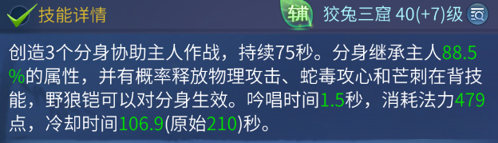
分身继承部分人物属性,同时享受野狼铠效果。分身拥有普通攻击、蛇毒攻心、芒刺在背三项技能。每提升1级技能,可增加0.5%人物属性。分身与人物实时同步属性,利用这一特性,可以使用技能项链卡分身等级。
- 蛇毒攻心
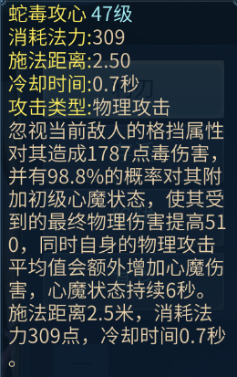
蛇毒攻心有2个效果
- 直接造成毒伤害
- 附加心魔效果
实际中蛇毒攻心的伤害还会加上瞬时攻击,它最终的伤害如下
蛇毒攻心伤害= 毒伤害+瞬时物理攻击+心魔加成
心魔状态有3层，重点关注第三层百毒穿心 ，该状态是集体共享且高等级覆盖低等级，在团本中可以优先考虑此技能
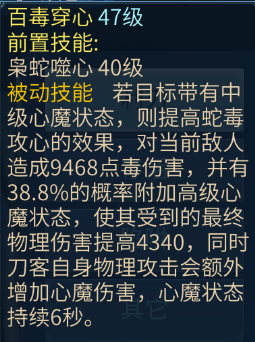
心魔状态的最终物理伤害受平均物攻影响，数值为4%
心魔状态最终物理伤害=技能描述部分+人物平均攻击4%
Tip
注意：心魔伤害不受目标减伤和防御影响，只受最终物理伤害减XX的词条影响
- 芒刺在背
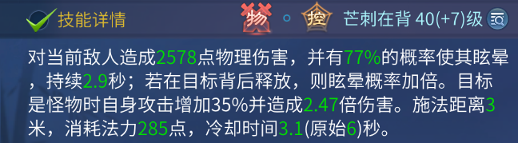
当目标为怪物时,自身攻击力增加35%,同时造成2.47倍的伤害
根据这句话我们得到芒刺在背的伤害公式
芒刺伤害公式=瞬时攻击 * 1.35 * 2.47 * (1 + BOSS伤害百分比) * (1 + 物理致命伤%)
以我的角色为例，物理攻击 28989-54008,物理致命伤害125%,BOSS伤害百分比4%，那么瞬时攻击就是从这大小攻击区间随机取一个值，假设是40000，带入计算如下
40000 * 1.35 * 2.47 * (1 + 0.04) * (1 + 1.25) = 312109
芒刺在背的提升巨大，PVE刀客可优先考虑此技能
60级天赋技能芒刺入骨可以带出血蛭陷阱，打怪时优先带此天赋
- 困兽一博
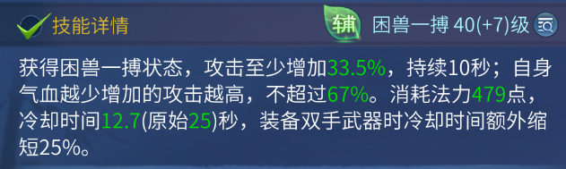
可以看出困兽一博有2个效果
- 攻击增加
- 气血越低增加的攻击越高
Tip
注意：困兽一搏的攻击增加不是面板的攻击，而是基础攻击的33.5%，想知道自己的基础攻击，可以从人物面板->物理攻击->属性构成->最大物理攻击->基础加成 中查看数值
困兽一搏还有一个100级技能天赋破釜沉舟可以增强，40级的效果如下：
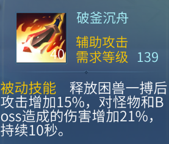
- 血蛭陷阱
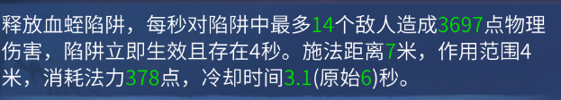
血蛭在团本中只有最高技能等级的刀客可以吃到伤害，因此在团本中可优先使用该技能项链
。该技能仅从描述上看，伤害并不高，但它还受噬血沁骨的增强，加上它是多段攻击，所以在长时间的副本中，伤害甚至能超过芒刺在背
项链选择
在致命伤没有达到125%时，优先选择多致命项链，已达到125%，按照以下选择
芒刺在背>血蛭陷阱>百毒穿心>困兽一博
考虑不容易洗出双6技能，最优解还是
固定 全技能+3+致命
技能搭配
- 技能
- 天赋技能
普通玩家
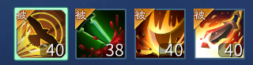
高致命玩家（无抽刀断恨情况下，能达到125%物理致命伤）
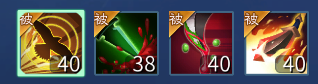
武器有芒刺入骨 普通玩家
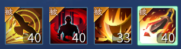
武器有芒刺入骨 高致命玩家（无抽刀断恨情况下，能达到125%物理致命伤）
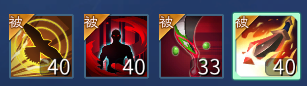
进阶提升
- 武器神兵重铸出
芒刺入骨可以让刀客在打出极致伤害下且最大程度回血
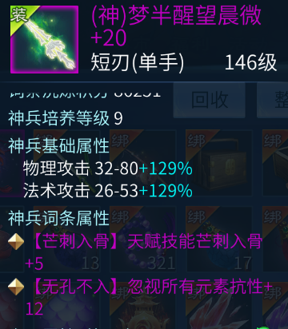
回血原理
芒刺在背触发芒刺入骨芒刺入骨触发血蛭陷阱血蛭陷阱触发噬血沁骨流血- 流血 触发
血饮狂歌进入可回血状态 - 任意非持续性技能触发
11%回血
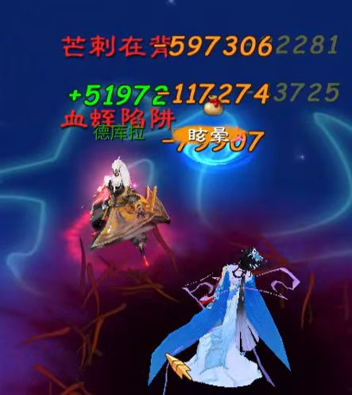
在芒刺打出致命的情况下，回血量是相当可观
- 卡攻速
刀客在PVE情况下，一般轮按这一套技能 蛇毒攻心,芒刺在背，困兽一搏,频率最高的是蛇毒攻心，它的冷却时间是0.7秒，
核心技能是芒刺在背，在理想情况下，它的冷却时间一结束，应该迅速释放。
困兽一搏=>芒刺在背=>蛇毒攻心=>蛇毒攻心=>蛇毒攻心=>蛇毒攻心=>蛇毒攻心=>芒刺在背
想要让芒刺在背及时释放，那它的冷却时间最好卡在0.7的倍数上，再一些点缓冲操作的延迟，例如 2.8，3.5，4.2，芒刺在背的原始冷却是6秒，相关冷却时间和攻速关系如下：
| 冷却时间（秒） | 攻速 |
|---|---|
| 2.8 | 2.15 |
| 3.5 | 1.72 |
| 4.2 | 1.43 |
此外攻速还可以减少分身及困兽一搏的冷却时间，这2个都可以大幅提高刀客的副本输出能力
队伍配合
来自若有云兮的StandBy剑圣是个打妖经验非常丰富的玩家，江湖尊称：14境伏妖天师，他的建议如下：
建议组建以物理输出为主的阵容，包括人物、灵兽以及召唤物
甲奶侠稳固防线，异人破防增伤，刀客破防和心魔引爆输出
在理想情况下，每个角色都携带1只物理谨慎灵兽，异人召唤4只物理宝宝，刀客召唤3个物理分身，则同一时刻就有15个物理输出单位,每秒可以提供90000的稳定伤害，参考底部表格，相当于为蜃妖副本下降了三分之一难度，而这仅仅只是心魔部分伤害。
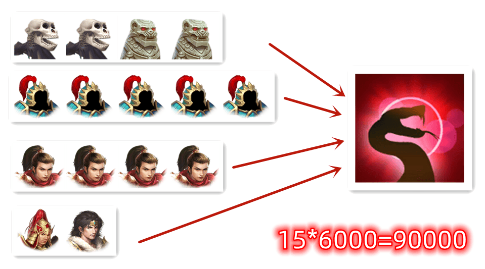
| 蜃妖 | 十四阶气血值/万 | 击杀最低秒伤/万 | 备注 |
|---|---|---|---|
| 英招 | 7750 | 25.83 | |
| 罗刹 | 9000 | 30 | 2只 |
| 镇狱王 | 8800 | 29.33 | 2只 |
| 狻猊 | 5100 | 17 | 不含召唤小怪 |
| 梦魇 | 5500 | 18.33 | |
| 剑邪 | 10000 | 33.33 | |
| 花妖 | 9000 | 30 | 5只，不含召唤小怪 |
| 熔岩巨灵 | 8500 | 28.33 | 2只 |
| 书卿 | 10000 | 33.33 | 5只 |
| 地三鲜 | 9500 | 31.66 | 3只，不含召唤小怪 |
一些14级蜃妖防御属性相当高，常令许多中低下玩家束手无策，根本破不了防，伤害也无法发挥出来。而这个组合在极致情况下可以破70%防御，难度大大降低，很好解决了这个痛点。
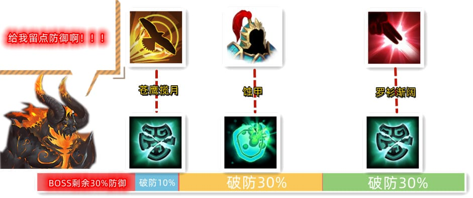
单双手之争
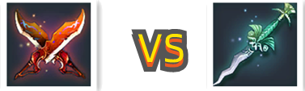
使用双手武器的角色通常攻速较慢但攻击力较高，而使用单手武器的角色攻速较快但攻击力较低。那么，在打副本时，哪种选择更强呢？
在实际战斗中，由于技能数量众多且伤害会叠加，我们无法仅通过单一技能进行直接比较。在之前的章节中，我们已经推导出了芒刺在背和蛇毒攻心的伤害计算公式。接下来，我们可以用代码来模拟释放技能的过程，以便更好地理解两者的表现。
- 变化的攻速
完成模拟逻辑后，我们将攻击力和攻速应用于一个为时5分钟的副本模拟，以我的角色为例。角色的攻击力范围在29000到54000之间。为了简化细节，我们假设物理致命伤已提升至125%，且致命一击的伤害达到了230以上（具有50%的致命率）。接下来，我们将首先观察攻速变化对伤害的影响。
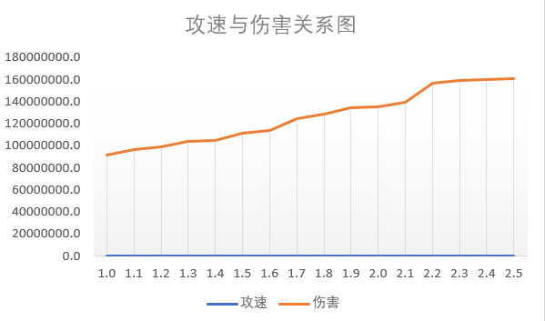
根据上述折线图，我们可以观察到攻速与伤害之间基本呈现线性正比关系。此外，在攻速为1.43、1.72和2.15时，伤害有明显的提升，这与前面章节的内容相呼应。
- 变化的攻击
1.43攻速每提升500平均攻击的伤害变化图表
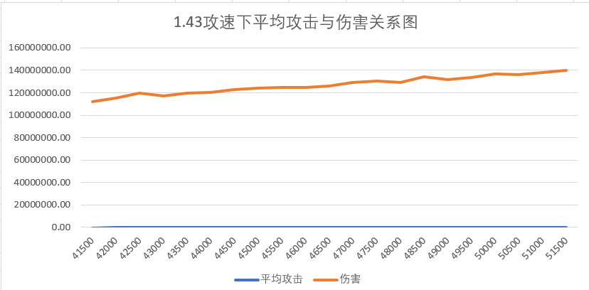
1.96攻速每提升500平均攻击的伤害变化图表
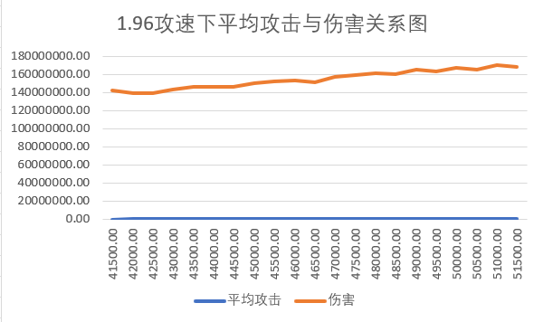
可以看出，对于刀客而言，虽然提升攻击力能够增加伤害，但其效果远不及攻速的提升。从上图中1.43和1.96的攻速趋势可以明显看出这一点。
以我的角色为参考，攻速从1提升至2.1，相当于在1.43的攻速下增加了1万的平均攻击力。此外，使用双手武器时，也很难达到1.43的攻速。
| 攻速 | 伤害 |
|---|---|
| 1.0 | 91388780.60 |
| 1.1 | 96685083.80 |
| 1.2 | 99119596.30 |
| 1.3 | 104306933.30 |
| 1.4 | 104668131.90 |
| 1.5 | 111756626.10 |
| 1.6 | 113728832.50 |
| 1.7 | 125070096.00 |
| 1.8 | 128800628.80 |
| 1.9 | 134994078.00 |
| 2.0 | 135762858.00 |
| 2.1 | 139198412.30 |
| 攻击速度 | 平均攻击 | 伤害 |
|---|---|---|
| 1.43 | 41500.00 | 112105095.30 |
| 1.43 | 42500.00 | 119529687.60 |
| 1.43 | 42000.00 | 115288609.70 |
| 1.43 | 43000.00 | 117067425.50 |
| 1.43 | 43500.00 | 119500698.70 |
| 1.43 | 44000.00 | 120532369.50 |
| 1.43 | 44500.00 | 122732070.90 |
| 1.43 | 45000.00 | 124011995.90 |
| 1.43 | 45500.00 | 124775195.60 |
| 1.43 | 46000.00 | 124970456.60 |
| 1.43 | 46500.00 | 125988347.00 |
| 1.43 | 47000.00 | 128916024.20 |
| 1.43 | 47500.00 | 130360538.60 |
| 1.43 | 48000.00 | 129292339.40 |
| 1.43 | 48500.00 | 134534381.70 |
| 1.43 | 49000.00 | 131481400.80 |
| 1.43 | 49500.00 | 133900051.80 |
| 1.43 | 50000.00 | 136946745.30 |
| 1.43 | 50500.00 | 135888128.50 |
| 1.43 | 51000.00 | 138236342.40 |
| 1.43 | 51500.00 | 140066624.50 |